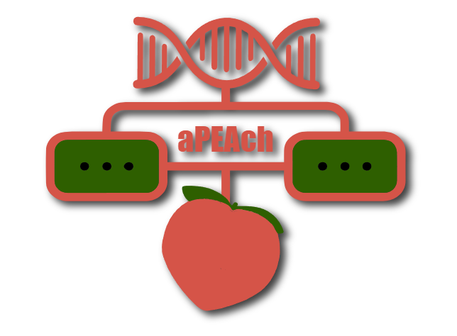
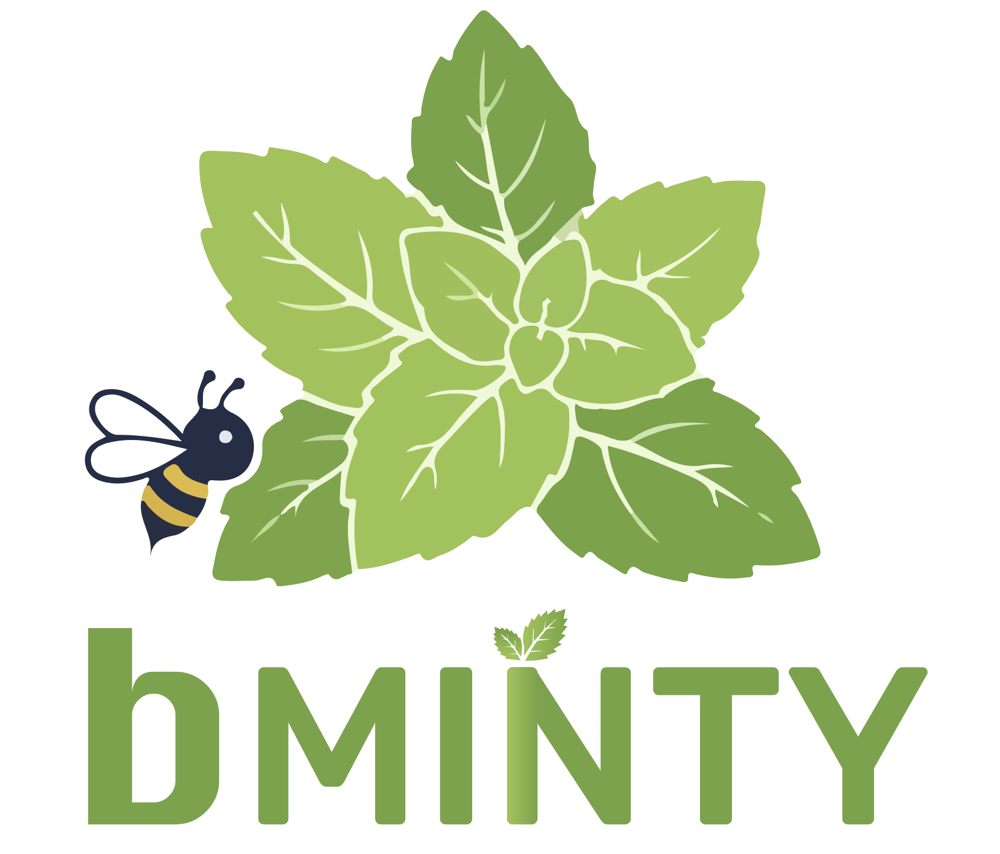

All software and training material is actively maintained in our GitHub environment. Please star our repositories if you find them useful and do not forget to leave feedback! Software improvement is a continuous process.

Short Description: The emergence of next-generation sequencing (NGS) signified a revolution in biology research by capturing the significance of DNA loci and RNA molecules on a genome-wide scale. The complexity and volume of NGS data highlight the need for robust and user-friendly computational tools. aPEAch, is an automated pipeline for end-to-end analysis of DNA and RNA sequencing assays, including small RNA sequencing. Implemented in Python, it allows users to customize the analysis and results, handling single or multiple replicates in batches, while also automating advanced unsupervised learning analyses. aPEAch offers quality control reports, fragment size distribution plots, and intermediate files supporting reproducibility and interoperability, along with publication-ready visualizations.
Tags: HTS data analysis; Pipeline; Transcriptomics; Epigenomics.
Language: Python.
OS: Linux.
Containerization: N/A.
Documentation: https://gitlab.com/a5465/apeach.
Repository: https://gitlab.com/a5465/apeach.
Publication: https://doi.org/10.3390/biology13070492.

Short Description: bMINTY is a locally deployed web application with an intuitive user interface, for structured management of post-alignment workflow data outputs. bMINTY supports metadata for studies, assays, and analysis assets, including workflows, genome annotation versions, and cell-level entities for single-cell assays. Users may export query results in RO-Crate format, providing machine readable data packages and metadata. These packages can be included as supplementary material with each publication, accompanied by analysis code deposited in public repositories for downstream ad hoc analyses. Together, these practices can promote transparency, efficient FAIR-aligned reuse of published post-alignment data.
Tags: HTS data and metadata management; FAIR; Reusability; RO-Crates.
Language: Python.
OS: Linux; Windows; macOS.
Containerization: Docker.
Documentation: https://georgakilaslab.github.io/bMINTY.
Repository: https://github.com/GeorgakilasLab/bMINTY.
Publication: https://doi.org/10.1093/nargab/lqag081.
Short Description: CNNAMON is a computational framework focused on developing explainable Convolutional Neural Networks (CNNs) for genomic and epigenomic data analysis. It aims to identify complex regulatory patterns from high-throughput sequencing data, including single-cell ATAC-seq and bulk epigenomic assays. By integrating deep learning with model interpretability techniques, CNNAMON seeks to uncover biologically meaningful genomic features, characterize regulatory mechanisms, and provide transparent, data-driven insights into gene regulation.
Tags: CNN; XAI; Epigenomics; Genomics.
Language: Python.
OS: Linux.
Containerization: N/A.
Documentation: https://georgakilaslab.github.io/CNNAMON.
Repository: https://github.com/GeorgakilasLab/CNNAMON.
Publication: N/A.
Short Description: NUTMEG is a computational framework designed to facilitate the integration and analysis of heterogeneous single-cell and spatial omics data using Graph Neural Networks (GNNs). It focuses on combining complementary molecular information from single-cell RNA sequencing, chromatin accessibility profiling (scATAC-seq), and spatial transcriptomics to investigate cellular heterogeneity and gene regulatory relationships. By leveraging graph-based representations and deep learning, NUTMEG aims to uncover complex molecular interactions, identify biologically meaningful patterns, and advance systems-level understanding of cellular organization and function.
Tags: GNN; XAI; Single-cell omics; Multi-omics.
Language: Python.
OS: Linux.
Containerization: N/A.
Documentation: https://github.com/GeorgakilasLab/NUTMEG.
Repository: https://github.com/GeorgakilasLab/NUTMEG.
Publication: N/A.
Short Description: raw2ready is a modular computational framework designed to streamline the harmonization, transformation, and exploration of heterogeneous experimental datasets, with a particular focus on industrial biotechnology and bioprocessing applications. It provides tools for data parsing, integration, time-series alignment, user-defined calculations, and interactive visualization. By incorporating AI-driven data exploration capabilities, raw2ready facilitates the transformation of fragmented experimental data into structured, analysis-ready datasets, supporting reproducible research, advanced analytics, predictive modeling, and digital twin applications.
Tags: Data harmonization; Vizualization; Data integration; Biomanufacturing; Agentic data exploration.
Language: Python.
OS: Linux.
Containerization: N/A.
Documentation: https://georgakilaslab.github.io/raw2ready.
Repository: https://github.com/GeorgakilasLab/raw2ready.
Publication: N/A.
Short Description: This hands-on workshop introduces participants to the fundamental concepts and computational methods used in single-cell RNA sequencing (scRNA-seq) data analysis. Through a combination of theoretical lectures and practical exercises, participants explore essential analytical steps, including data preprocessing, highly variable gene identification, dimensionality reduction, cell clustering, and cell-type annotation. The workshop is organized into three interactive sessions and provides reproducible Python-based Jupyter notebooks, example datasets, and educational materials, enabling participants to develop practical skills in analyzing and interpreting single-cell transcriptomic data.
Tags: Single-cell omics; Transcriptomics; Pre-processing; HVG detection; Clustering; Cell-type annotation; Interpretation.
Language: Python.
OS: Linux; Windows; macOS.
Repository: https://github.com/GeorgakilasLab/Workshop_scRNAseq_Analysis.